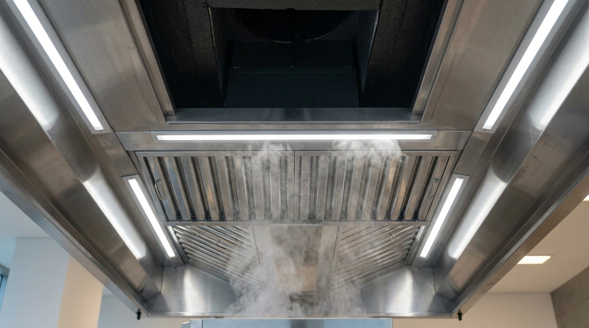

Data Dinas Pemadam Kebakaran DKI Jakarta mencatat bahwa sekitar 30–40% kebakaran yang terjadi di restoran dan usaha kuliner diakibatkan oleh penumpukan lemak pada saluran exhaust dapur yang tidak terawat. Api dari kompor bisa dengan mudah merambat melalui tumpukan kerak minyak di dalam hood dan ducting, menghasilkan kebakaran yang sulit dipadamkan dalam hitungan detik.
Kabar baiknya: ancaman ini 100% dapat dicegah dengan program perawatan berkala yang konsisten. Dalam artikel ini, kami akan membagikan jadwal perawatan standar industri yang digunakan oleh restoran bintang lima dan hotel berbintang untuk menjaga sistem exhaust dapur tetap bersih, aman, dan efisien.
Peringatan Bahaya: Grease filter yang tidak dibersihkan lebih dari 2 bulan pada dapur dengan aktivitas memasak tinggi dapat menjadi titik nyala api pada suhu 250°C — suhu yang sangat mudah dicapai dalam operasional dapur normal sehari-hari.
Mengapa Perawatan Hood Exhaust Sangat Kritis?
Hood exhaust (cerobong hisap dapur) bekerja menarik asap, uap air, dan partikel lemak yang dihasilkan dari proses memasak. Seiring waktu, partikel lemak ini menempel dan mengeras di permukaan grease filter, dinding hood, dan sepanjang saluran ducting. Penumpukan ini menciptakan tiga risiko utama:
Risiko Kebakaran
Kerak lemak adalah bahan bakar yang sangat mudah terbakar dan susah dipadamkan
Pemborosan Energi
Filter mampet membuat blower bekerja ekstra keras, meningkatkan konsumsi listrik 20–35%
Risiko Higienitas
Kerak lemak adalah media pertumbuhan bakteri yang mencemari udara dan makanan
Jadwal Perawatan Berkala yang Direkomendasikan
Frekuensi perawatan sangat bergantung pada intensitas penggunaan dapur. Semakin sering dan semakin banyak volume memasak dengan minyak dan lemak, semakin pendek interval pembersihan yang diperlukan.
🔴 Pembersihan Grease Baffle Filter
Filter saringan lemak adalah komponen pertama yang paling cepat kotor. Pembersihan rutin mencegah penyumbatan dan mengurangi risiko kebakaran.
- Lepas filter dari hood
- Rendam dalam air panas + degreaser
- Sikat dan bilas bersih
- Ganti jika sudah bengkok/rusak
🟠 Pembersihan Interior Hood & Grease Trap
Bagian dalam hood canopy dan grease trap (penampung lemak) perlu dibersihkan menyeluruh setiap kuartal agar tidak jadi sarang timbunan.
- Bersihkan dinding dalam hood dengan steam
- Kuras dan bersihkan grease trap
- Cek kondisi lampu hood
- Inspeksi visual sambungan hood-ducting
🔵 Servis Blower & Perawatan Komponen Mekanis
Semester-an adalah waktu yang tepat untuk servis blower exhaust dan memeriksa semua komponen mekanis yang tidak terlihat dari luar.
- Cek dan lumasi bearing blower
- Inspeksi & setel tegangan V-belt
- Bersihkan impeller dari kerak lemak
- Cek kondisi damper & fire damper
- Torsi ulang semua baut rangka
🟢 Duct Cleaning Menyeluruh + Inspeksi Sistem
Sekali setahun, seluruh jalur ducting dari hood hingga outlet di rooftop wajib dibersihkan dan diinspeksi secara menyeluruh oleh tim profesional.
- Duct cleaning seluruh jalur
- Inspeksi visual kebocoran & korosi
- Uji airflow & kapasitas CFM
- Test fire damper otomatis
- Laporan kondisi sistem tertulis
Panduan Membersihkan Grease Filter Sendiri

Proses pembersihan grease baffle filter menggunakan steam cleaner dan degreaser kimia untuk melarutkan kerak lemak yang mengeras.
Pastikan Blower & Kompor Dimatikan
Sebelum mulai membersihkan, pastikan blower exhaust dan semua kompor dalam keadaan mati dan dingin sempurna minimal 30 menit. Gunakan APD (sarung tangan karet, kacamata, masker).
Lepas Grease Baffle Filter
Geser atau angkat filter dari slotnya. Hati-hati — filter mungkin berat karena penuh timbunan lemak. Siapkan nampan atau wadah untuk menampung tetesan minyak saat melepas.
Rendam dengan Degreaser + Air Panas
Rendam filter dalam larutan degreaser alkali (bisa menggunakan baking soda + dish soap pekat atau degreaser komersial) dan air panas minimal 80°C selama 20–30 menit agar kerak melunak.
Sikat dan Bilas dengan Tekanan Tinggi
Gunakan sikat nylon keras untuk menyikat sela-sela baffle filter. Bilas dengan air bertekanan tinggi (pressure washer ringan) hingga tidak ada sisa lemak atau sabun. Keringkan sebelum dipasang kembali.
Pasang Kembali dan Dokumentasi
Pasang filter yang sudah bersih dan kering ke posisi semula. Catat tanggal pembersihan pada logbook perawatan dapur untuk memudahkan monitoring jadwal selanjutnya.
Butuh Tim Profesional untuk Duct Cleaning?
Jadwalkan pembersihan menyeluruh oleh tim bersertifikat kami. Termasuk laporan kondisi sistem.
5 Tanda Hood Exhaust Perlu Segera Diservis
Selain mengikuti jadwal rutin, waspadai tanda-tanda berikut yang menunjukkan sistem exhaust perlu penanganan segera:
Asap mengembang keluar hood adalah tanda kapasitas hisap berkurang drastis.
Bunyi baru pada blower mengindikasikan beban berlebih atau kerusakan bearing.
Tetesan lemak dari hood menandakan grease trap sudah penuh dan overflow.
Bau ketengikan menandakan timbunan kerak lemak yang sudah teroksidasi lama.
Kenaikan tagihan listrik bisa jadi tanda blower bekerja ekstra melawan sumbatan.
Perawatan Terjadwal = Investasi Keamanan
Program perawatan berkala hood exhaust bukan sekadar kewajiban kebersihan — ini adalah investasi langsung dalam keselamatan karyawan, keamanan properti, dan kelangsungan bisnis restoran Anda. Biaya pembersihan rutin jauh lebih rendah dibandingkan kerugian akibat kebakaran, renovasi, atau downtime operasional.
Tips Hemat: Daftarkan restoran Anda ke Paket Kontrak Perawatan Tahunan Ducting Kitchen. Anda mendapatkan kunjungan berkala terjadwal, laporan kondisi sistem, prioritas penanganan darurat, dan diskon 20% untuk suku cadang.